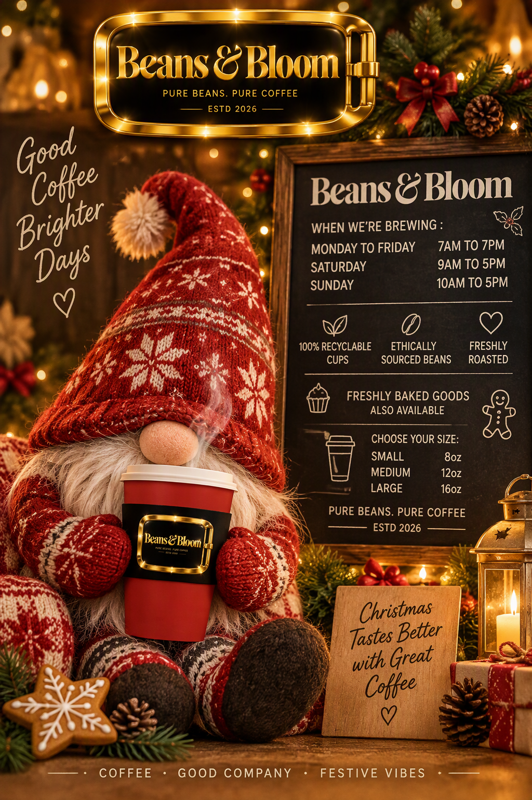
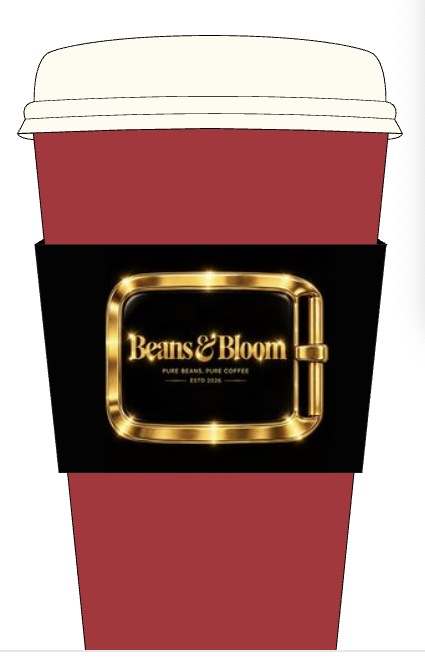
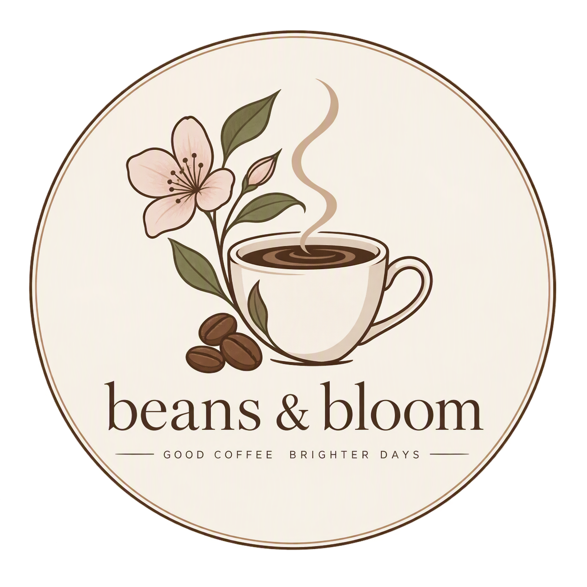
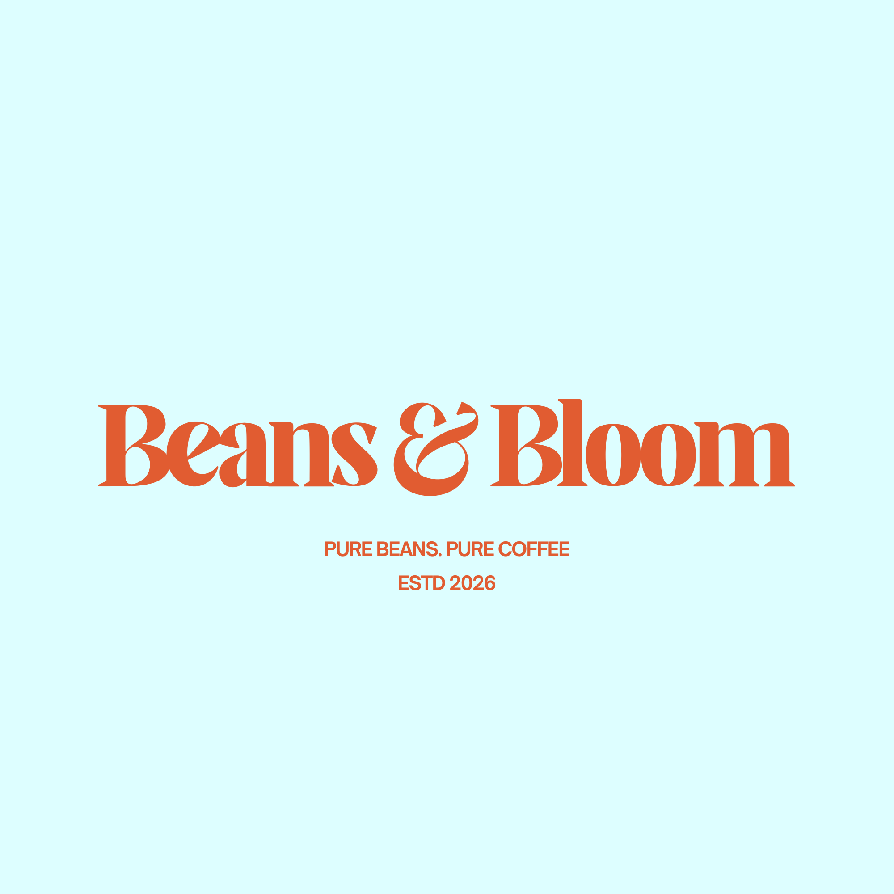
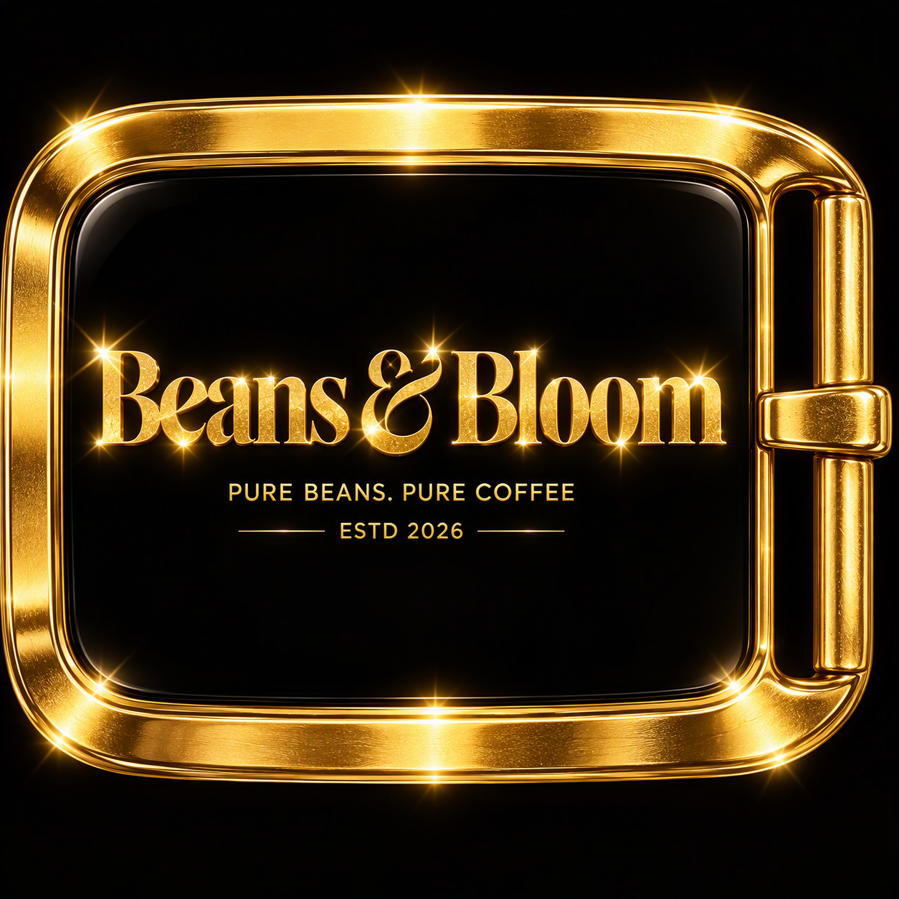

ROUND 01
Setting the scene
Every successful café starts with a clear idea.
Select an option to reveal what we chose.
THE PEOPLE BEHIND THE COFFEE
EST. 2026 · PURE BEANS. PURE COFFEE.
A warm welcome, a fresh brew, and a little Christmas magic. Discover the café we became.

THE SEASONAL CAMPAIGN · BEANS & BLOOM
Our final brand expanded beyond the logo into an advertisement and matching takeaway cup — the identity our team developed together.
CHAPTER 01 / OUR JOURNEY
10 DECISION ROUNDSWe began as five individuals with different ideas. Rewind to our first decisions, then follow the ten rounds that shaped our café — and the way we worked together.
Different ideas. Long conversations. Taking time to reach a shared conclusion.
We began building on each other’s perspectives and finding ways to move forward together.
We became quicker at reaching decisions while still considering their impact.
ROUND 01
Every successful café starts with a clear idea.
Select an option to reveal what we chose.
CHAPTER 02 / BRAND EVOLUTION
3 LOGO VERSIONSBeans & Bloom went through three logo versions. Our evolving look is part of our team story. Our first design blended into the competition. We took a bold orange-and-blue direction, then developed a festive Christmas identity with a matching Santa-belt cup.

"Our cream, organic-style identity was too similar to other teams. We recognised we needed a more distinctive look.

We moved to a bright orange-and-blue logo — a deliberate change that showed our willingness to rethink.

Black and gold Christmas branding, a Santa-belt-inspired design and a matching coffee cup.
CHAPTER 03 / THE FINAL VERDICT
OUR RESULTS & REFLECTIONOur results show both progress and setbacks. A high point in Week 8 was followed by weaker profits in the final rounds — an important lesson about balancing quick decisions with careful analysis.
SPEAKER 5 · RESULTS & REFLECTION — 1:50
Weekly net income moved from a $4,092 loss in Week 1 to $15,260 in Week 8, but slipped to $6,509 and $2,868 in Weeks 9 and 10. Our biggest lesson: faster agreement is valuable, but it still needs evidence and scrutiny.
Bars show positive profit magnitude; Week 1 was a loss.At first, we took time to reach a conclusion. By the final rounds, we had learned to listen, compromise and decide more confidently.